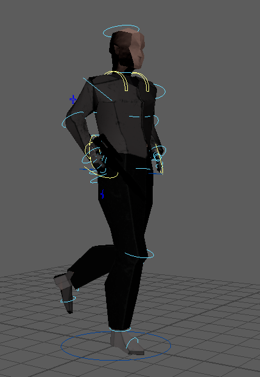
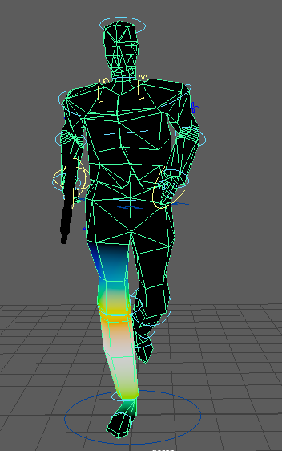

Throughout this project I was definitely inspired by the low poly modelling style, I found it quite compatible with Unitys software due to the need for a few faces while being able to give a good amount of detail.
I also felt comfortable and in control while doing hard surface modelling due to the simple structure making it feel like I was putting together a Lego set.
I first started this project by modelling a humanoid character, my aim was for it to be a Hobbit but as my idea changed it slowly became a solider. As much as I do enjoy rigging humans manually I wanted to try out the Advanced Skeleton and Rigging Package.
I found the whole setup very enjoyable and simple to use, it got a bit tedious when trying to line up the bones with the model but when that was done it looked very professional.


Through the package, to save myself some time I used the Walk Designer to animate my character's run rather than doing it manually which can get very difficult and time-consuming. The Walk Designer was very simple to use giving a very convincing run animation (after fixing the skin weights), however, I would never use this on the main character of the screen rather this would work well for background characters where their animation does not have to be polished.